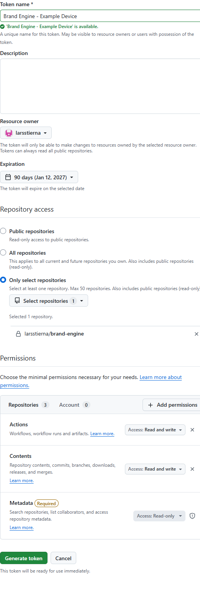
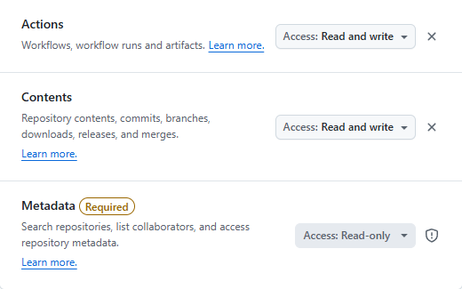

Create a GitHub token for this computer
The token lets this browser read your private Brand Engine repository and start its GitHub Actions. Create a separate token for each computer.
Open fine-grained tokens
In GitHub, open your profile menu → Settings → Developer settings → Personal access tokens → Fine-grained tokens → Generate new token.
Name it and limit repository access
Use a recognizable name such as Brand Engine - Laptop. Choose the resource owner larsstierna, an expiration you can maintain, and Only select repositories. Select only brand-engine.

Add only the required permissions
Under Repository permissions, add these two permissions and set both to Read and write. Keep GitHub's required Metadata permission at Read-only. Do not grant account permissions.
- Contents: Read and write
- Actions: Read and write
- Metadata: Read-only (required by GitHub)

Generate and copy the token once
Click Generate token, then copy the value immediately. GitHub will not show it again. Do not put this token in a repository file, an Actions secret, or a chat message.
ANTHROPIC_FOUNDRY_API_KEY. The Foundry key belongs in GitHub Actions repository secrets; it does not go in this form.Connect Brand Engine
Return to the app's Settings page. The owner, repository, and branch should be prefilled. Paste the token into Access token, then click Test and connect. The app stores it in this browser only; another computer needs its own token.